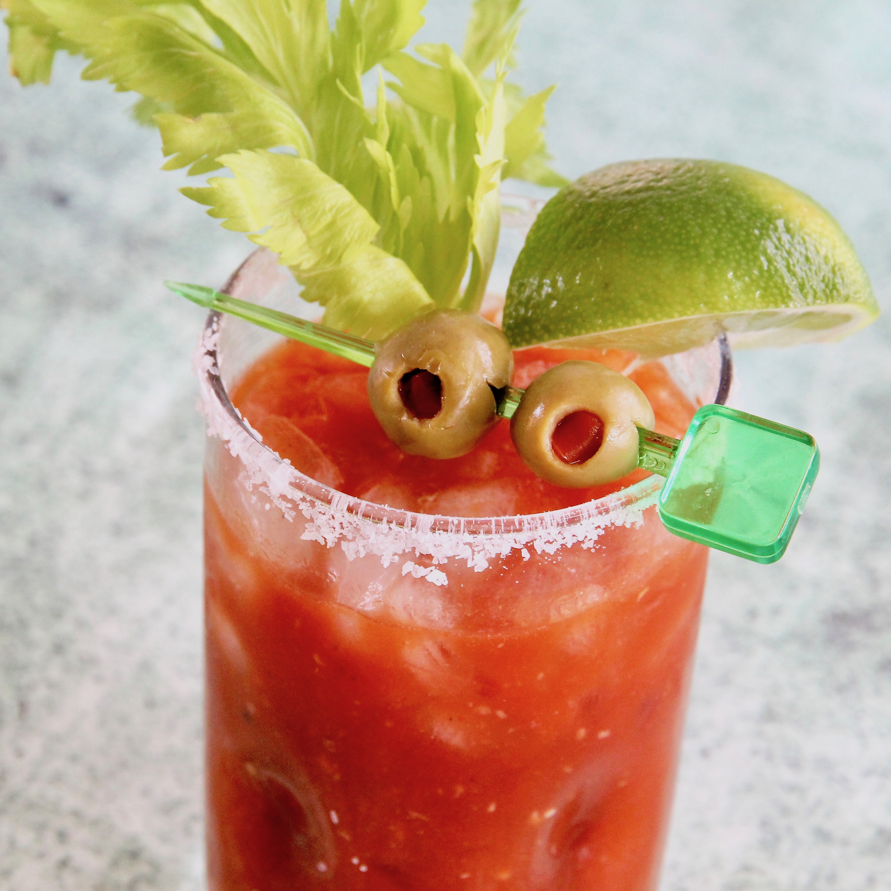

Bloody Mary

Description
Easy recipe for homemade Bloody Mary
- Prep: 2 mins
- Total: 2 mins
- Servings: 1
- Yield: 1 cocktail
Ingridients
- 1 teaspoon sea salt
- 1 cup ice cubes
- 1 (1.5 fluid ounce) jigger vodka
- ¾ cup spicy tomato-vegetable juice cocktail (e.g., V-8)
- 2 dashes Worcestershire sauce
- 1 dash hot pepper sauce (e.g. Tabasco™)
- salt and pepper to taste
- 1 stalk celery
- 2 stuffed green olives
Steps
-
Salt the rim of a tall glass. To do so, pour salt onto a small plate,
moisten the rim of the glass on a damp towel and press into the salt.
Fill the glass with ice cubes.
-
In a cocktail mixer full of ice, combine the vodka, vegetable juice,
Worcestershire sauce, hot pepper sauce, salt and pepper.
Shake vigorously and strain into the glass.
Garnish with a stalk of celery and olives stuck onto a toothpick.
Back